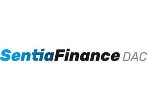

Trade Mark Journal No.2025/044 31 October 2025
UK00004282863 23 October 2025 (36)

- Class 36
- Financial advice; Finance services; Financial research; Financial analysis; Financial assistance; Providing financial information on-line; Financial and monetary services; Financial assessment of company credit; Financial consultancy; Financial evaluation [insurance, banking, real estate]; Financial evaluation; Financial evaluation for reinsurance purposes; Financial guarantees [surety services]; Financial information; Financial investment; Financial management; Financial planning and investment advisory services; Financial transfers and transactions, and payment services; Financial appraisal services; Financial planning services; Financial economic analysis; Financial services relating to business; Financial services relating to investment; Mutual funds; Financial advisory and management services; Financial services relating to wealth management; Venture capital and venture capital management services; Financial investment advisory services; Wealth management; Asset management; Investment management; Investment consultancy; Financial planning and management; Financial management for businesses; Financial brokerage services; Financial rating and provision of credit reports; Financial information and advisory services; Financial information, data, advice and consultancy services; Fundraising and financial sponsorship; Financing services; Banking; Financial valuation services; Advisory services relating to loan services; Advisory services related to financial loans; Financial services for the provision of credit; Financial transaction services, specifically, facilitation of secure commercial transactions and payment options; Loan advice and loan procurement services; Mortgage services; Investment management; Trusteeship; Financial advisory services; Banking services for deposit-taking; Processing payments for the purchase of goods and services via an electronic communications network; Rental of cash dispensers or automated-teller machines; Electronic processing of payments; Processing of electronic payments; Payment transaction card services; Processing of payment transactions via the Internet; Conducting cashless payment transactions; Conducting of financial transactions on-line; Conducting of capital market transactions; Electronic credit card transactions; Bank card, credit card, debit card and electronic payment card services; Automated telling machine services; Online business banking services; Providing information relating to the rental of cash dispensers or automated teller machines; Credit card and debit card services; Processing of debit card payments; Processing of electronic check payments; Financial consultancy relating to the execution of cashless payment transactions; Issuing stored value cards; Issuance of credit cards; Automated banking services; Electronic banking services; Internet banking; Providing on-line investment account information; Electronic banking via a global computer network [internet banking]; Credit services; Insurance underwriting; Telephone banking services; Banking services relating to the deposit of money; Banking; On-line bill payment services; Bill payment services; Cash, check (cheque) and money order services; Cheque encashment services; Issuing of cheques; Financial transaction services; Issuing tokens of value as a reward for customer loyalty; Financial intermediary services; On-line real-time currency trading; Providing financial information via a web site; Online banking; Computerised financial services; Investment services; Financial investment research services; Financial market information services; Financial risk management services; Computerised financial information services; Financial risk assessment services; Financial investment management services; Computerised financial advisory services; Banking services provided in person, at bank counters, by phone, video call, email messaging, SMS, online chat systems including web chat and social media, internet, or any other global communication network; Financial advisory services for individuals; Financial advisory services for companies; Financial research and information services; Financial services relating to securities; Financial services relating to stocks; Financial services relating to savings; Financial services relating to bonds; Financial and investment consultancy services; Financial information services relating to financial stock markets; Financial information services relating to financial bond markets; Investment consultation; Financial advice relating to tax; Financial services relating to international securities; Financial information services relating to individuals; Financial advisory services relating to securities; Advisory services relating to financial planning; Advisory services relating to [financial] risk management; Financial services related to dealing in shares; Provision of financial services by means of a global computer network or the internet; Financial services provided over the telephone and by means of a global computer network or the internet; Independent financial planning advice; Financial advice relating to trusts; Financial advice relating to investment; Financial advice relating to wills; Financial advice relating to inheritance; Financial advice relating to pensions; Financial advice relating to settlements; Financial advice relating to employee share schemes; Personal financial planning services; Financial advisory services relating to retirement plans; Financial advisory services relating to assets Management.
CAIXABANK, S.A.
Representative: Pure Ideas Limited